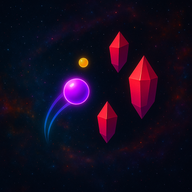

Chroma
Write to us and a person reads it. Most answers are below.
Yazdığınızı bir insan okuyor. Yanıtların çoğu aşağıda.

Please include your device model, your iOS or Android version, and the world and level you were playing (for example “Inferno · Level 13” or “Daily Rhythm”). If the music and taps feel out of sync, say whether you use Bluetooth headphones. Replies usually come within a few days.
Lütfen cihaz modelinizi, iOS ya da Android sürümünüzü ve oynadığınız dünya ile bölümü yazın (örneğin “Inferno · Bölüm 13” veya “Günün Ritmi”). Müzik ile dokunuşlar uyumsuz geliyorsa Bluetooth kulaklık kullanıp kullanmadığınızı da belirtin. Yanıtlar genellikle birkaç gün içinde geliyor.
Tap anywhere to jump. Tap every 2 beats to glide, on every beat to climb, and skip a beat to dive. The ring around your orb closes in on each beat: tap the moment it touches you for a PERFECT. Crystals and the glowing lines at the top and bottom are deadly. The 1-minute training (Level 0) can be replayed from the level list at any time.
Chroma learns your device’s audio delay as you play, so timing improves after a few runs. Bluetooth headphones add extra delay; if you switch between wired and wireless audio, open Settings › Timing calibration and tap Reset so the game learns the new delay.
Finish a level to unlock the next one. Collect over 50% of the orbs for 2 stars and over 75% for 3. There are 25 levels in 5 worlds; Singularity, the last world, is the EXTREME one.
PERFECT taps, orbs and close calls fill the Chroma meter. When it is full, Chroma Mode doubles every point and paints the world in rainbow for a short while. On-beat taps also grow your combo multiplier up to x4; an off-beat tap breaks the combo.
If you have a Heart power-up, use it to continue where you were. Once a day you can also watch a short optional video to continue. Otherwise just retry the level — nothing is lost.
At midnight in your phone’s local time. Open the game once a day to keep your login streak; a streak shield, earned along the way, saves the streak if you miss a day. Turn on Settings › Reminders to get a nudge when your reward is ready or your streak is about to end.
No. Every level plays offline. The internet is only needed for the global leaderboard and for optional reward videos.
Points from your runs add up to your leaderboard score. Pick a nickname of 4–15 letters or numbers; you can change it once an hour. There is no account or sign-in.
On your device. There is no account and no sign-in, so progress does not travel between devices, and deleting the app deletes it.
Tap the language button on the main menu. Ten languages are supported: English, Turkish, Spanish, Portuguese, German, French, Russian, Japanese, Korean and Simplified Chinese.
Videos depend on what the ad network has to serve at that moment. If nothing is available, wait a little and try again. Nothing an ad gives is required to finish the game. You can review your ad privacy choices in Settings.
Zıplamak için ekranın herhangi bir yerine dokunun. Her 2 vuruşta bir dokunursanız süzülürsünüz, her vuruşta dokunursanız yükselirsiniz, bir vuruş atlarsanız dalarsınız. Kürenizin etrafındaki halka her vuruşta daralır: size değdiği anda dokunursanız PERFECT alırsınız. Kristaller ile üstteki ve alttaki parlak çizgiler ölümcül. 1 dakikalık eğitimi (Bölüm 0) bölüm listesinden istediğiniz zaman tekrar oynayabilirsiniz.
Chroma, siz oynadıkça cihazınızın ses gecikmesini öğrenir; birkaç denemeden sonra zamanlama oturur. Bluetooth kulaklıklar ek gecikme yaratır; kablolu ve kablosuz ses arasında geçiş yaptıysanız Ayarlar › Zamanlama kalibrasyonu’nu açıp Sıfırla’ya dokunun, oyun yeni gecikmeyi öğrensin.
Bir bölümü bitirince sonraki açılır. Kürelerin %50’sinden fazlasını toplarsanız 2 yıldız, %75’inden fazlasını toplarsanız 3 yıldız alırsınız. 5 dünyada 25 bölüm var; son dünya Singularity, EKSTREM olanı.
PERFECT dokunuşlar, küreler ve kıl payı kaçışlar Chroma göstergesini doldurur. Gösterge dolunca Chroma Modu kısa bir süre her puanı ikiye katlar ve dünyayı gökkuşağına boyar. Vuruşa denk gelen dokunuşlar kombo çarpanını x4’e kadar büyütür; vuruş dışı bir dokunuş komboyu bozar.
Kalp güçlendiriciniz varsa onu kullanıp kaldığınız yerden devam edebilirsiniz. Günde bir kez kısa ve isteğe bağlı bir video izleyerek de devam edebilirsiniz. Aksi halde bölümü tekrar deneyin; hiçbir şey kaybolmaz.
Telefonunuzun yerel saatiyle gece yarısı. Giriş serinizi korumak için oyuna günde bir kez girin; yol boyunca kazandığınız seri kalkanı, bir günü kaçırırsanız serinizi kurtarır. Ödülünüz hazır olduğunda ya da seriniz bitmek üzereyken haber almak için Ayarlar › Hatırlatıcılar’ı açın.
Hayır. Bütün bölümler internetsiz oynanır. İnternet yalnızca dünya sıralaması ve isteğe bağlı ödüllü videolar için gerekir.
Oyunlarınızda kazandığınız puanlar toplanarak sıralama puanınızı oluşturur. 4–15 harf ya da rakamdan oluşan bir takma ad seçin; takma adınızı saatte bir değiştirebilirsiniz. Hesap ya da giriş yok.
Cihazınızda. Hesap ve giriş sistemi yok, dolayısıyla ilerleme cihazlar arasında taşınmıyor ve uygulamayı silmek ilerlemeyi de siliyor.
Ana menüdeki dil düğmesine dokunun. On dil destekleniyor: Türkçe, İngilizce, İspanyolca, Portekizce, Almanca, Fransızca, Rusça, Japonca, Korece ve Basitleştirilmiş Çince.
Videolar, reklam ağının o an sunabildiğine bağlı. Hiçbir şey yoksa biraz bekleyip tekrar deneyin. Reklamların verdiği hiçbir şey oyunu bitirmek için zorunlu değil. Reklam gizlilik tercihlerinizi Ayarlar’dan gözden geçirebilirsiniz.
The game has no accounts and never asks for your e-mail address. Your progress stays on your device; only your nickname and leaderboard score are sent to the leaderboard. The full policy is on its own page.
Oyunda hesap yok; e-posta adresiniz hiçbir zaman istenmiyor. İlerlemeniz cihazınızda kalıyor; sıralamaya yalnızca takma adınız ve sıralama puanınız gönderiliyor. Politikanın tamamı kendi sayfasında.